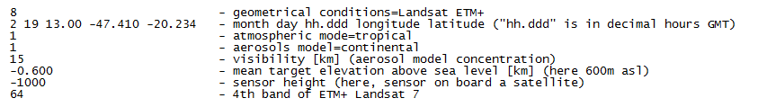

Correzione atmosferica¶
Il modulo esegue la correzione atmosferica sulla mappa raster di input utilizzando l’algoritmo 6S (Seconda Simulazione del segnale satellite nello spettro solare). Il modulo funziona solo con dati satellitari. Non utilizzare per dati da aereo. Una descrizione dettagliata dell’algoritmo è disponibile presso il sito internet “Land Surface Reflectance Science Computing Facility” (http://modis-sr.ltdri.org/).
Quando viene lanciato la regione in uso viene modificata in modo da coprire la mappa raster di ingresso prima che venga eseguita la correzione atmosferica. Le impostazioni precedenti vengono ripristinate successivamente. Si noti inoltre che il tempo di passaggio del satellite deve essere specificato in Greenwich Mean Time (GMT).
Per maggiori informazioni si veda la documentazione del comando di GRASS GIS utilizzato i.atcorr
Input¶
- Selezionare il file con i parametri 6s: selezionare il file nel quale sono memorizzati i parametri dell’algoritmo 6s.
Si ricorda che tale file deve essere formattato utilizzando le informazioni contentue nel sito “Land Surface Reflectance Science Computing Facility” (http://modis-sr.ltdri.org/). Esempio di file 6S:

Dati di input: nella finestra compaiono i raster attualmente aperti in QGIS. Selezionare il raster su cui applicare la correzione atmosferica.
Selezionare una sola banda: selezionare la banda sulla quale eseguire la correzione atmosferica. L’algoritmo processa una banda alla volta.
Parametri¶
Selezionare l’algoritmo da utilizzare: selezionare l’algoritmo con cui effetturare la correzione atmosferica. Al momento è implementato solo l’algoritmo 6s.
Convertire la mappa in input in riflettanza: selezionando questa opzione, la mappa viene convertita in immagine di riflettanza. Se non viene selezionata questa opzione, l’immagine è restituita in radianza (default).
ETM+ precedente al 1 Luglio 2000: SOLO nel caso di immagini Landsat 7. Selezionare questa opzione se le immagini sono state acquisite prima del 1 Luglio 2000.
ETM+ successivo al 1 Luglio 2000: SOLO nel caso di immagini Landsat 7. Selezionare questa opzione se le immagini sono state acquisite dopo il 1 Luglio 2000.
Output¶
Risultato: inserire il percorso e il nome del file raster di output.